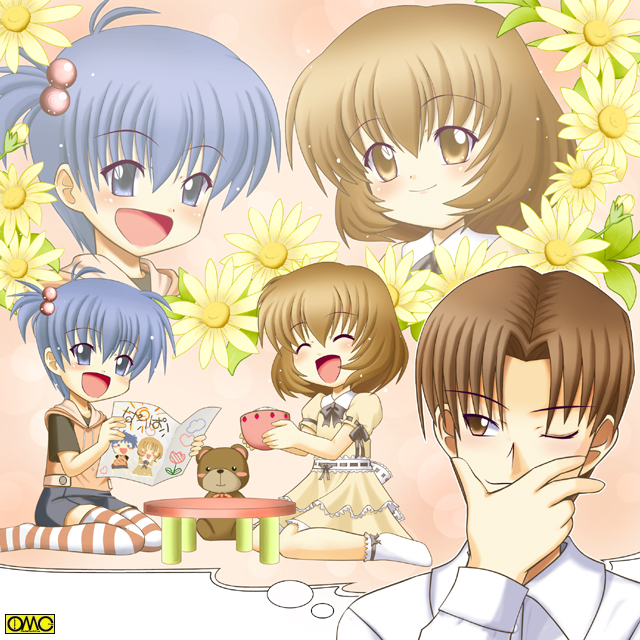

第１０話『恋するみずき』
六月下旬。梅雨明けはしていなかった。土曜の午後であるこの日も雨に祟られていた。
「もぅー。洗濯物が全然乾かないじゃないのよ」
既に帰宅して制服からジャンバースカートになった七瀬は家事をしていた。
母親が帰るまでの負担軽減と言うより彼女は家事が好きなのだ。
「えい。もったいないけど乾燥機使っちゃおう」
家事が好きなのはよいがここまで来ると既に主婦である。
彼女は一通りの洗濯などを済ませた。夕食の準備にはさすがに間があるし気分転換もしたかった。
しかし外出しようにも外は雨。出歩くのはかなり億劫である。近場ですませることにした。
「みずきんところいってくるから」
二人の弟にそれを告げると隣の喫茶店へと出向いた。
喫茶レッズ。雨宿りに使われてか大盛況であった。そんな中に来たから声のかけ辛い七瀬。。
（混んでるわねェ。とりあえず様子を見ようかな…あらあら。薫ちゃん。相変わらず可愛いかっこうしてるわね）
店内を見まわした七瀬の目にウェイトレス姿の薫が注文を取っている様子が見えた。
『実は男』の反動かフリルやリボンを好む傾向があり裾の大きく広がったスカート。真っ赤のリボンのポニーテールと言うスタイルだった。
男と思えないほど細い足は白いニーソックスで包まれていた。細身なのでスカート姿になると男とは見ぬけない。
「ご注文はお決まりでしょうか」
ちょっと聞くとハスキーな女の子の声だが、実は男の子が無理して高い声を出しているのが薫の現状。
「そうですね」
注文を尋ねられた客はそんなことを微塵も考えない。色白の眼鏡の青年。サラリーマンらしいスーツ姿。
出張から帰ってきたのか出向いてきたのか仙台の土産を持っていた。
（わぁ…細い人…食も細そうね…）
などと薫が思っていると青年はメニューのランチメニューの一番上を指差す。
「このランチメニューの一番上のサンドイッチ…」
（やっぱりね…じめじめして食欲もなくなるもんね…）
「…から一番下のステーキまで。全部で１４品。お願いします」
「へ？」
聞き返すのも無理はない。
「いえ…ですからランチメニューを上から下まで全部。前金がいいですか？」
「い…いえ…これだけ…」
「ええ。これだけにしておきますよ。腹八分目が健康にはいいですから」
「は…はい…かしこまりました…」
薫はふらつきながらオーダーを店内の父親に告げる。
「オーダー。ランチメニュー全部」
接客をしていた瑞枝は、とあるテーブルの客に笑みを投げかける。
小柄な眼鏡の青年でかなりの童顔だ。
「こんにちは。日本語のお勉強ですか。ヨンさん」
「ア…瑞枝さん。いえ。わたしのツアーのお客さんに私を気に入っていただけたのはよいのですが、宴会のカラオケで替え歌を歌ったらとにかく受けてしまい名指しでこのヨン・フーを指名するほど。
面白い替え歌を作らないといけないからプレッシャーですよ」
「まぁ。中国からおいでになったのに替え歌を作れるほど日本語がお上手なんですね」
相変わらずピントのあってない瑞枝のコメントである。
七瀬の後から一人の男性が入ってきた。手には一升瓶を持っている。
「やあ。マスター。こんにちは。約束通り『喜久酔』を持ってきました」
「おお。宇佐美さん。これはどうも。静岡のいいお酒ですよね。ありがとうございます」
「いやいや。喜んで貰えて私も嬉しいですよ。ところで明日のレースなんですが…
この雨で馬場が悪くなったから軸を変えようかと思ってるんですよ。どうです？ なんか一押しあります」
「いや…わたしはギャンブルやりませんから」
「ああ。そうでしたね。うーん。どれを切るか…」
忙しい店内の様子を見るが
（みずきはいないみたいね…）
そう判断したときだ。背後から学校で聞きなれた少女声がする。
「七瀬。こんなところで突っ立って何してんだ？」
「ああ。みずき…その格好は？」
制服以外の少女姿を見たことがないわけではなかったが、さすがにブラウスにミニスカートと言う格好には驚いた。
「ん？ 出前でコーヒー運んできたんだが」
「それでいなかったのね…でもどうしてスカートなのよ」
さすがに声を潜めて言う。答えるみずきはさらに小さな声で
「しょうがねぇだろ……男物は片っ端から濡らしてまだ乾いてないし…薫もお袋もスカートしかねえ」
「あんた歩き方が悪いのよ。水をばちゃばちゃ撥ねるし…ふーん。なるほど。男に戻っても外に出ちゃうとドジ踏んで女の子になっちゃうから」
ちょっと意地の悪い目で見る七瀬と照れてぶっきらぼうになるみずき。
「……悪かったな…だから最初から女になっといた。気にしなくていいしよ」
「あんたね…家でまで女じゃそのうち本当に女の子になっちゃうわよ…で。スカートはともかく何でミニなのよ？」
「これか？ 騙されたと思ってはいてみたが、ズボンやロングスカートだと湿気で纏わりつくけどこれだと案外いい感じなんだよ。生足だから濡れてもタオルでふけばすむしな」
（女になったばかりのころはあんなにスカートを嫌がってたのに使い分けするほどになるとは…やっぱり学校で女の子のふりしているせいかしら？
最近は女の子同士の会話にもすんなり入れるようになってきたし…段々女性化が進んでんじゃないの）
そうは思うが言わぬが花と黙っていた。代わりに繁盛している店を気遣い提案する。
「忙しいみたいね。手伝おうか」
「え…いいよ。そろそろ客もはけてきたし」
坂本俊彦は父親を駅に迎えに出向いていた。
「雨の中をすまんな。傘も財布も大学に忘れてきてしまったわ。おかげでタクシーも呼べん。わはははははは」
「父さん…着払いと言う手もあったけど」
「お…おお。そうか。そうすればよかったか」
軽い調子で笑う父親。なんとなくイメージとしては会社の社長である。ロマンスグレーがなかなか渋いが軽薄な調子がそれを崩す。俊彦はため息をつく。
「父さん…そんなだと学者バカって言われちゃうよ」
「まぁいいではないか。ちゃんと研究はしておるぞ。
何種類の動物の遺伝子から抗癌物質を発見したしな。ヒトに応用できるかはこれからじゃが」
「道の真ん中でする話でも…」
車道よりを歩いていた彼は父親の方を向いていたら大きなウィンドウが。喫茶店の中に見知った二人の少女が。
「ちょうどいいや。喫茶店があるよ。雨宿りして行こう」
「いや…別にわしはそうまでして今すぐ話したいわけでは…」
しかし優等生の坂本俊彦には珍しく強引に「喫茶レッズ」に入っていった。
「坂本先輩！？ 奇遇ですね」
学校からは離れているので珍客の部類に入った坂本に、驚きを隠せない七瀬。なんとなくぎこちなく語る坂本。
「や…やあ。及川くん。赤星くん。確かに偶然だね。アルバイト？」
「ここオレ…あたしんちなんです」
実家と言うことで『オレ』と口走りかけたが、正体を知らない学校関係者なので少女を装う。
「ああそうなんだ。及川くんは？」
「私の家はすぐそこなんです」
「へぇ。そうなんだ。この店のすぐ側…じゃ二人とも子供のころからの知り合い？」
「いわゆる幼馴染って奴ですよ。恥ずかしいけどままごとでパパ役やらされたし」
「女の子同士でおままごとは珍しくないだろうけど…女の子なのに父親役なのかい？」
「ア…この辺りにおままごとやってくれる男の子いなかったんです」
みずきの失言をとっさに七瀬がフォローする。ただし瑞樹以外には本当に同世代の男の子はいなかったのも本当だが。
「ふむ。君たちの子供時代か。それはさぞかし可愛かったんだろうね」
ふと想像してしまう坂本。５〜６歳くらいのみずきと七瀬。
みずきの正体を知らない坂本は当然ながら幼女としての姿をイメージする。
そして七瀬。純然たる女性の彼女は５歳の時もちゃんと女性であったが、そのときはもう少し太っていた。
しかし坂本の想像の中では華奢な天使のような姿である。
この二人の愛らしい子供時代を想像…いや。妄想して若干だが顔が緩む。

このイラストはＯＭＣによって作成されました。
クリエイターの酔生夢子さんに感謝します。
「とりあえず…ご注文は何にします？」
銀色のトレイで口元を隠して上目遣いに尋ねる薫。客がいい男なので舞いあがっているところがある。
「ああ…そうだね。とうさん。何にする？」
喫茶店に来て頼まないわけには行かない。当然のことを思い出して注文を。
「コーヒーをくれ。濃い目の奴じゃ。頭使うとくたびれていかん」
「じゃ僕はアイスティーで」
注文を聞き遂げ薫はカウンターへと行く。
雨がやんだ。一時的な物か。また降る前にと次々と客が店を出て、次の目的地へと移動する。おかげで店も一息つける状態になる。
「お前も一息ついていいぞ」と父親に言われたみずきだが、結局は七瀬ともども坂本親子の相手をしていた。
意外に饒舌な坂本俊彦は自分のこと。学校のこと。
果ては父親が遺伝子工学の博士であることまで、無理やりネタをひねるようにしゃべっていた。
もちろん一方的ではなく、自分のことを語った後で無理やりでない程度に、みずきと七瀬のことも聞いていた。
小一時間もいたが…
「俊彦。喉が乾いたからと喫茶店に入ってそれだけ喋ってたら余計に乾くぞ。続きは学校でせい」と父親に引かれて出て行った。
「案外お喋りなのね。坂本先輩って。嫌味じゃないけど…みずき？ どうしたの？」
傍らのみずきを除くとなにか思案顔だった。２度３度と呼びかけられて
「ア…ああ。なんでもないよ。なんでも」とごまかすように打ちきる。
（へんなの）
そう思う七瀬だったが、そろそろ夕方の家事の時間となり帰ることにした。
よく日曜日。瑞樹は病院にいた。ガウン一枚だけの姿でＣＴスキャンにかけられていた。
「ＯＫ。じゃ次は女の子になってくれ」
「はい」
あらかじめ用意されたコップの水を頭からかぶり女の子へと変身する瑞樹。
「おお（なんてＢＴＣＳ受け渡し後に、雄介がクウガになったのを見て驚いた杉田さんみたいな声を出してしまったぜ）」
初めて変身したとき以来、秘密の主治医である津崎医師以外にこの日はもう一人いた。
１８０センチはあろう巨躯。丸めがね。検査中でも口から離さないパイポ。男は映像を見ながら口を開く。
「おいおい。たまに名古屋から研修に来て、その合間の日曜に旧知の仲のお前さんを尋ねてみれば…俺をこんな危ないやつの仲間にする気か？」
「まぁそう言わないで意見を聞かせてくれませんか。阿利さん。
秘密を守るために俺一人で定期的に日曜を利用して検査してましたが、正直…世界に例を見ないケースで手をこまねいているんですよ」
意見を求められた男。阿利は津崎の先輩だった。一向に見つからない対処法に意見を求めるべく呼んだのだ。
「危ないですか。おれ」
女の子のまま男言葉でガラス越しに尋ねるみずき。津崎はマイクで
「もう検査は終わりだ。男に戻って着替えていいよ」
本人を交えて３人での検査結果の通達をしていた。
「こっちが今の君。男の子のときだ。平均的な１６歳男子よりやや発育の遅れている部分がある。元々小柄だからそれもあるかもしれないがな」
津崎はもう一枚を指す。骨格が明らかに違う。
「こっちは女の子の時だが…こっちは平均的な１６歳女子と比べて遜色ないと思われる。つまり女としての完成度の方が高いと言うことだ」
「………」
瑞樹は言葉がない。阿利が続ける。
「事情は津崎からだいたい聞いた。現在は女子として暮らしているらしいね」
「学校だけです。そちらの方が正体ばれにくいし」
「それでも登校時から帰宅まで八時間。それ以外はすべて基本である男としてもやはり多い。
男としての完成度が低いのはこの変身が邪魔しているとは成長の個人差もあるから言いきれないが、女としての完成度の高さはそれが大きい。
このまま成長を続けて行くと、やがて男を愛するだけの完全な女になってしまうぞ」
気まずい沈黙。口を開いたのは瑞樹だった。
「でも…治療法はあるんですか」
言われた二人の医師は重いため息をつく。
「難しいな。世界に例もない。たぶん遺伝子情報が壊れている。それを正常にしてやればいいのだろうが」
「遺伝子…」
「だが症状自体が確認されているだけで世界初だ。
原因は推測できても対策までは…もしも俺の推測通りに遺伝子としてもそれはもう神の領域だよ。簡単には手は出せない。
世論も怖いしな。まぁ誰か専門家が個人的にやってくれればあるいは…な」
「突然変異だ。逆にいえば明日元に戻るかもしれないし、逆に女に固定されてしまうかもしれない。
もっともこれも推測だが、女を選びたいなら方法はあると思うな」
「え？」
つい聞き返してしまった瑞樹。津崎は苦々しく言う。
「妊娠したらたぶん最低でもその間は胎児を守るために母体が変身・復帰はできないようになるだろうね。
そしておそらくそのまま正常なＸＸ染色体に固定されて死ぬまで女だろう。
まぁもっとも男と寝ようと思った時点で心は女。完全に女になるつもりならそれでいいだろう。
だが『どうせ戻れるから』などと興味本意でベッドに行くなよ。
妊娠するには排卵・着床が条件だが普通の女がだいたい４週間掛かるといえど、君の体は一瞬で女になってしまうくらいだ。
一日で子供の産める体になってもおかしくない。警告だ」
夜。瑞樹はベッドの上で膝を抱いて考えていた。
（やるしかない）
なにかを決めた瑞樹はふと壁にかけられた無限塾の女子制服を見上げた。
月曜日。いつものように七瀬が迎えに来た。彼女は玄関に現れたみずきを見て怪訝な表情をする。
「どう言う心境の変化？ リボンだなんて」
「気分転換だよ。気分転換」
頭の上に上条から貰った誕生日プレゼントのリボンが鎮座していた。
「ふーん…（あんなに女の子関連アイテムを嫌っていたのに…どうしたのかしら？ 元々ぬいぐるみは好きだったけど。本当に女性化が進んじゃったのかしら）」
「行きましょ。七瀬」
『う…うん（『行きましょ』なの？ 『行こうぜ』じゃなく）
言葉遣いの変化。それが七瀬には引っかかったがとりあえず登校する。
駅を出る。七瀬が行こうとするがみずきが動かない。
「どうしたの？」
「うん…ちょっと…あ、いたっ」
誇張ではなくみずきは顔を輝かせる。
「せんぱぁーい」
甲高い少女声でぶんぶんと手を降り坂本俊彦に駆け寄る。馬鹿の様に見える滑稽さだが愛しく思える可愛さでもあった。
当の坂本は平凡な登校中にいきなり現れた同行者に戸惑っていた。
「赤星くん…一人なのかい」
「いいえ。七瀬もいますよ」
「おはようございます。坂本先輩」
「ア…ああ。おはよう。及川くん」
「先輩。学校まで一緒に行きません？」
「そうだね。３人で行こうか」
坂本は学園の貴公子たる微笑で二人を誘う。破願するみずきとそして表情を崩す七瀬。
（なによみずき…今のぶりっ子声。
いつもなら女のときでも低く押し殺してなるべく男っぽくしてるのに、今の一オクターブは上がっていたわよ。そんなことしてまで先輩の気を…）
ここで七瀬ははっとなる。
（『先輩の気を引く？』 どうして…女の子じゃないのよあなたは。まさか…ずっと女で通して心まで…）
登校中ずっとみずきはしゃべっていたが七瀬は押し黙っていた。
「うげ。あいつホモかよ。でも体は女だから肉体的にはノーマルか」
休み時間。みずきがいなくなったのでみんなに相談する七瀬。真理の第一声がそれだった。
「ぬぅ…戦国の世の小姓は夜伽の役目も務めたと言うが」
「みーちゃん体も女の子だもんね。しかも可愛い顔だし」
「ない話じゃないよな。どこかの心理学の実験で、学生を囚人と看守に分けて演じさせていたら、段々と看守役は傲慢になり囚人役は卑屈になっていったと言う。
赤星も少女を演じているうちにそう言う感情が芽生えたとかな」
「うーん。例えるなら最初は素人そのものだったクウガが、戦いを経るうちにスピーディーな戦いができるようになったのと似てるか」
「とにかく…真剣に愛しているのであれば祝福してあげるべきでしょうか」
「姫ちゃん…上条。的外れすぎ」
榊原が釘を刺す。そして推測を続ける。
「しかしこの世の中には男の体でありながら男を愛するホモと言う人種もいる。ましてや赤星は体が女。なりやすくはあろうが…でも豹変しすぎだよな」
榊原は窓の外を見た。二年生がバレーボールをしている。その輪の中に坂本俊彦がいる。
その傍らにはみずきがいて共にバレーボールに興じている。
やたらに笑い、そしてボールを取りに行くたびに、軽く触れたり時には抱きつく形になったり。
「あの媚び方。俺にはなにか戦略的な物を感じるけどね」
「戦略って…何を？」
さすがにそこまではわからない。それが答えだった。
みずきのこの行動は多くの女生徒の反感を買った。
しかしそれはタレントの結婚に近い感じで見られていた。
何しろ『学園の貴公子』と『アイドル才女』である。
中にはいつかみずきがこうすると見ていた女子もいるくらいである。
だが大半が諦める中でめらめらと嫉妬の炎を燃やす少女がいた。
「……あの女め……この私を差し置いて坂本くんに露骨なアプローチを…
身の程と言う物をこの橘千鶴が教えて差し上げるわ。おーっほっほっほっほーっっっ」
切れた千鶴の高笑いが学園中に響き渡った。
ピンクの嵐の予感だった。